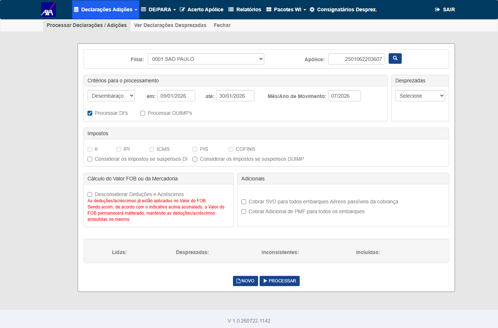
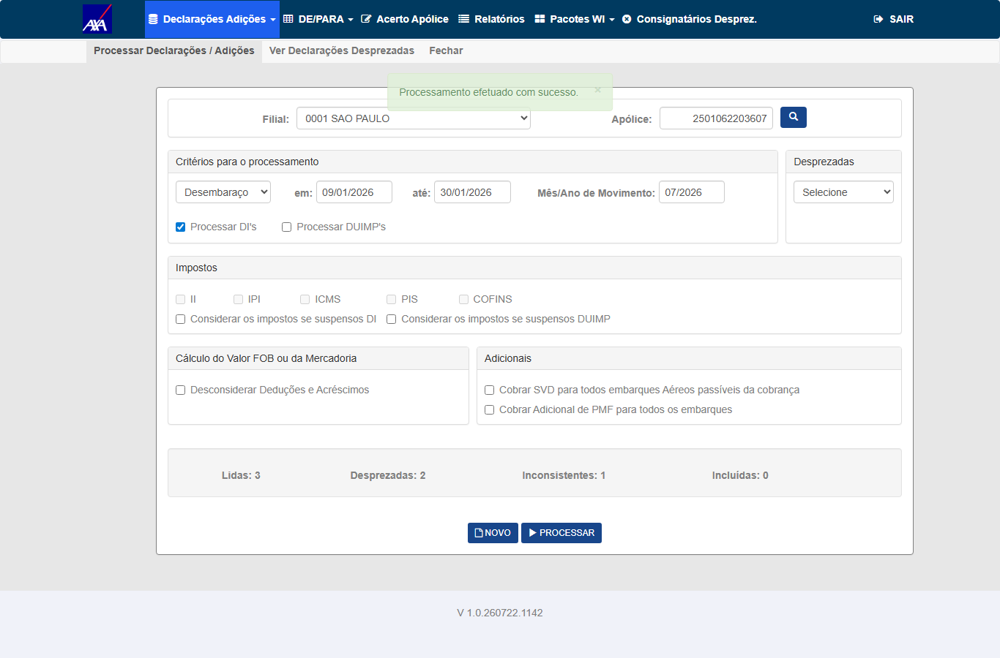
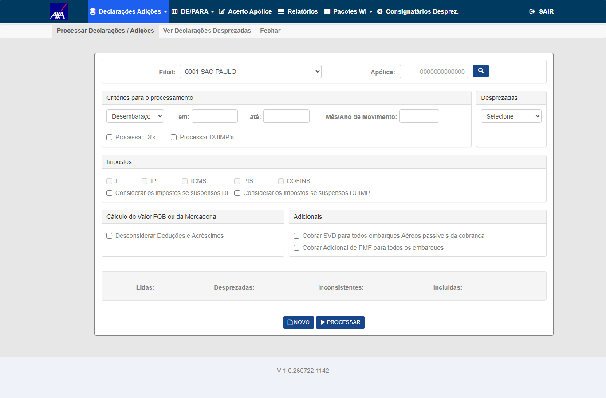

Grupo A — Flag OFF (regressão — executável)
1 CT ▾Tipo
Regressão — com a flag AgrupamentoAverbacaoHabilitado desligada, não há agregação, então cada linha equivale a 1 item e os contadores devem manter o comportamento anterior.
Pré-condições
- CITWEB AXA HML, Interface WI/Siscomex — Processamento de DI's/DUIMP's
- Flag
AgrupamentoAverbacaoHabilitadoOFF - Arquivo/pacote DI sem linhas agregadas (q_itn_agp = 1 por linha)
Passos
- Processar um lote de DI's com a flag OFF
- Observar os contadores lblDILida / lblDIDesprezada / lblDIInconsistente / lblDIIncluida durante e ao fim do processamento
- Comparar com o nº de linhas do arquivo
Resultado Esperado
testes-automatizados/sprint-10/pbi-7582/ct_wis_isolamento_contadores_di.py (mesmo fluxo Processamento; Fase 0 + T1).

Grupo B — Flag ON (DUIMP agregado — diferido até migration/flag/Worker em HML)
5 CT ▾Objetivo
Núcleo do card: com a flag ON e uma linha agregada representando vários itens (q_itn_agp>1), validar que o contador em tela reflete o nº de averbações, conforme regra decidida pela PO (24/07) — não a soma dos itens do agrupamento. (O CA original pedia somar q_itn_agp; a PO redefiniu para averbações — daí o ponto de atenção de possível bug de contagem.)
Pré-condições
- Flag
AgrupamentoAverbacaoHabilitadoON + migration aplicada + Worker gravando linhas agregadas em HML - Pacote DUIMP com ao menos 1 linha agregada com q_itn_agp > 1 (ex.: 1 linha = 5 itens)
- Serviço de expansão #7802 publicado
Passos
- Processar o pacote DUIMP com linha(s) agregada(s)
- Verificar lblDIIncluida ao fim: deve refletir a soma de q_itn_agp (itens reais), não o nº de linhas
- Confirmar via SQL a soma de q_itn_agp das linhas processadas
Resultado Esperado
AtualizaContadoresDIPorItens soma q_itn_agp = itens, o que contraria a regra).O #QA-STATUS: BLOQUEADO de 28/07 dizia "CTs Worker-dependentes SEM massa para
validar". Não vale mais. Medição de 04/08 na AXA HML (tb_itf_smx_dcl_pnd_dui):
270 linhas com q_itn_agp ≥ 2, a maior com 145 itens. O José havia
avisado no card em 29/07 11:35 que o WorkerDUIMP tinha dois serviços apontando para o mesmo banco
e que já estava rodando — aviso que ficou 6 dias sem resposta do QA.
Massa que discrimina o fix: apólice 3762900634322 · filial
3762 · desembaraço 06/2026 → 72 linhas agregadas = 1.401 itens
(84 pendentes no período, 0 averbações hoje). Contador ~72 → APROVADO · ~1.401 → REPROVADO.
O oráculo não sai da tela (lição do #7762 no mesmo dia): o nº de averbações
é o delta de tb_mov_avb_int_cit antes/depois; a soma de itens vem de
SUM(q_itn_agp). Script:
testes-automatizados/sprint-11-citweb/pbi-7803/ct_ctd_002_003_contador_agregada.py.
Onde parei (3 tentativas, INCONCLUSIVO — não é REPROVADO): com filial 3762, critério Desembaraço, 01→30/06/2026 e só Processar DUIMP's, o modal de confirmação aparece e é confirmado, mas nada processa — contadores vazios, 0 averbações criadas, pendentes inalterados (84 → 84).
Fui ler o seletor de verdade —
InterfaceSiscomexDeclaracaoPendenteRepository.ListarPorData (linha 511) — e a base do meu
raciocínio cai:
sts_prcnão aparece noWHERE. O seletor nem consulta a tabela de protocolo. Logo "já foi gravada" não exclui a declaração do processamento — era exatamente o que eu havia afirmado.- Para AXA o código cai no
else(linha 588) e filtra sempre pord_dsb_mdr_smx; oswitchde critério só vale para TOKIO/LIBERTY/ACE/CHUBB. OddlCriteriovoltar para "Selecione" era pista falsa. - O único filtro extra é
i_dpz != 'S'— e as 84 declarações estão todas comi_dpz='N'.
Rodando a query do próprio sistema com o meu range (desembaraço 01→30/06/2026, apólice 3762900634322): 84 declarações distintas retornadas, com ou sem a exclusão de desprezadas. A massa é elegível pelo critério do próprio sistema.
Veredito volta a INCONCLUSIVO — não "sem defeito" (a explicação caiu) e não "defeito" (não provei). Duas explicações restam, e se distinguem por medição: (1) defeito real — elegíveis, processamento confirmado, efeito nenhum; (2) minha automação não enviou o que eu penso (as datas setadas por JS podem não entrar no POST). Próximo passo: interceptar o POST do Processar e ler o payload exato.
Lição, que é a parte útil: usei sts_prc como critério de
elegibilidade sem verificar se o sistema o usa para isso. Mesmo erro de método do #7762 hoje —
concluir a partir de uma métrica antes de checar se ela mede o que eu penso.
Eu havia levantado duas hipóteses e perguntado ao José o significado de
e_dcl_smx. Retirei a pergunta — respondi pelo dado:
- A hipótese do
e_dcl_smxcaiu: cruzando com a tabela de protocolotb_itf_smx_ctl_prc_dui, 100% das declarações têm protocolo — 1.106 com'1'e 121 com'2'. O campo não indica processada/pendente. - Quem responde é o
sts_prc: as 84 declarações da minha massa estão todas comsts_prc='C'— "DUIMP Gravada". Já foram processadas. Não havia nada a processar, e é por isso que os contadores vieram vazios. Comportamento correto para "sem dado", não defeito — o que confirma que marcar INCONCLUSIVO em vez de REPROVADO foi o certo.
O que destrava, e é trabalho do QA: preciso de declaração agregada
ainda não gravada. Recarregar o pacote faz o WorkerDUIMP reingerir as declarações — o
mesmo procedimento descoberto no #7930. Roteiro do próximo ciclo: recarregar o pacote → confirmar por SQL que
existe agregada com q_itn_agp≥2 sem sts_prc='C' → processar → ler os
contadores. Sem dependência de terceiros.
⚠️ Achado lateral (não deste card): das 270 declarações
agregadas da base, 32 estão com sts_prc='D' e a mensagem
"Desprezada - Erro ao incluir averbação agrupada". A mensagem é específica de averbação
agrupada, o que pode interessar ao #7802/#7804 — ou pode ser massa ruim de HML. Não estou afirmando que é
defeito; vou investigar e, se for, abro card próprio com evidência.
⛔ Armadilha nova: a filial precisa ser a da apólice. O
default da tela é 0001; com a filial errada o botão Processar não abre nem o modal,
sem mensagem nenhuma.
Objetivo
Verificar que TODOS os 4 contadores (lblDILida, lblDIDesprezada, lblDIInconsistente, lblDIIncluida) somam q_itn_agp, incluindo linhas desprezadas/inconsistentes agregadas.
Pré-condições
- Mesmas do CT-CTD-002
- Pacote com linhas agregadas em cada categoria: incluída, desprezada, inconsistente
Passos
- Processar o pacote com linhas agregadas nas 4 categorias
- Verificar cada contador ao fim vs. a soma de q_itn_agp por categoria (via SQL)
Resultado Esperado
q_itn_agp (itens) por categoria, é REPROVADO.q_itn_agp ≥ 2),
a massa existe, e o que resta é um obstáculo de execução na tela de Processamento — não uma dependência de terceiros.
Este CT roda na mesma passagem do 002, lendo os 4 contadores por categoria.Objetivo
CA exige validação em SQL Server e Oracle. Verificar que os contadores produzem o mesmo resultado (soma de q_itn_agp) nos dois bancos.
Pré-condições
- Ambientes AXA HML em SQL Server e em Oracle disponíveis
- Mesmo pacote DUIMP agregado processado em ambos
Passos
- Processar o mesmo pacote agregado no ambiente SQL Server e no Oracle
- Comparar os 4 contadores entre os dois bancos
Resultado Esperado
Objetivo
CA: a atualização via SignalR (DIProcessamentoHub.AtualizaContadoresDI) continua em tempo real, sem degradação perceptível de performance, mesmo somando q_itn_agp.
Pré-condições
- Flag ON, pacote DUIMP agregado com volume relevante
Passos
- Iniciar o processamento e observar os contadores atualizando ao vivo na tela
- Verificar que a atualização é incremental/tempo real (SignalR) e não só ao final
- Observar se há travamento/lentidão perceptível durante o broadcast
Resultado Esperado
Objetivo
Cenário acrescentado a pedido da Fabiola (Gate 2, 24/07): executar o processamento com usuários diferentes simultaneamente. Os processos devem rodar de forma independente, sem um impactar os números exibidos na tela do outro. Valida o isolamento do broadcast SignalR por usuário (grupo userIdHub — mesma mecânica do #7582).
Pré-condições
- CITWEB AXA HML, Interface WI/Siscomex — Processamento de DI's/DUIMP's
- Dois usuários HML distintos, cada um em sua sessão/navegador
- Um pacote/lote para cada usuário (podem ter volumes diferentes)
Passos
- Usuário A inicia o processamento do seu lote
- Enquanto A processa, o Usuário B inicia o processamento do seu lote em outra sessão
- Observar os contadores (Lida/Desprezada/Inconsistente/Incluída) na tela de cada usuário
- Conferir, ao fim, que os números de A refletem só o lote de A e os de B só o lote de B (via SQL por usuário)
Resultado Esperado
userIdHub).pbi-7582/ct_wis_isolamento_contadores_di.py. Resultados: T1/T3/T4 (B ocioso enquanto A processa DI / DI+DUIMP / DUIMP) → contadores de B permanecem vazios (ISOLADO); T2 (A estável enquanto B processa) → A mantém 3/2/1/0 (ESTÁVEL); T5 (concorrência real, A e B processando ao mesmo tempo) → cada um vê os seus 3/2/1/0, sem vazamento cruzado (ISOLADO). Isolamento por userIdHub (SignalR JoinGroup) confirmado.
